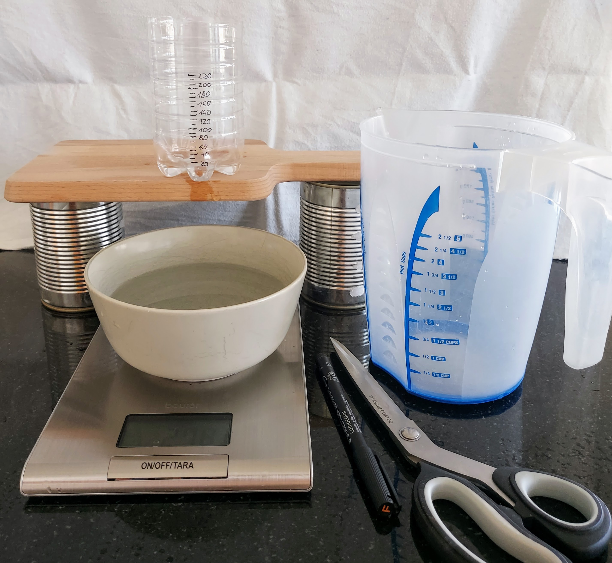
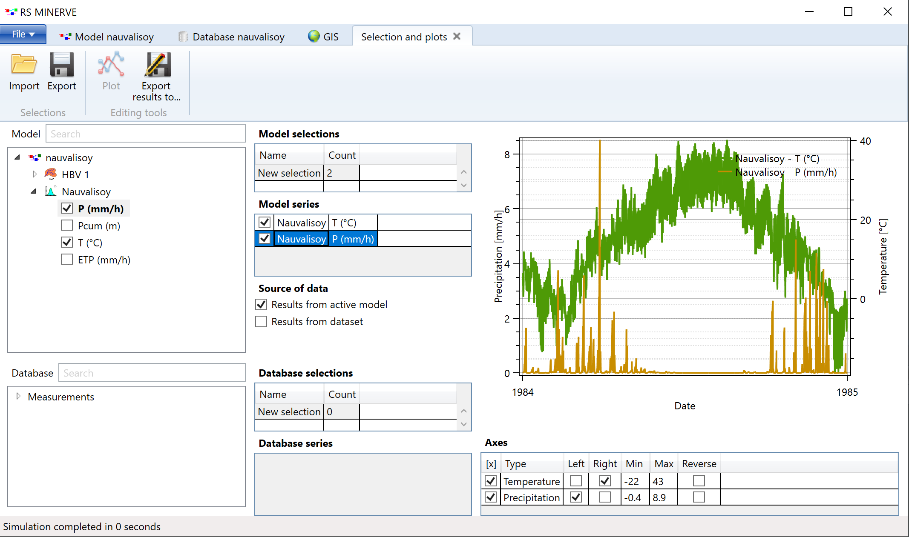
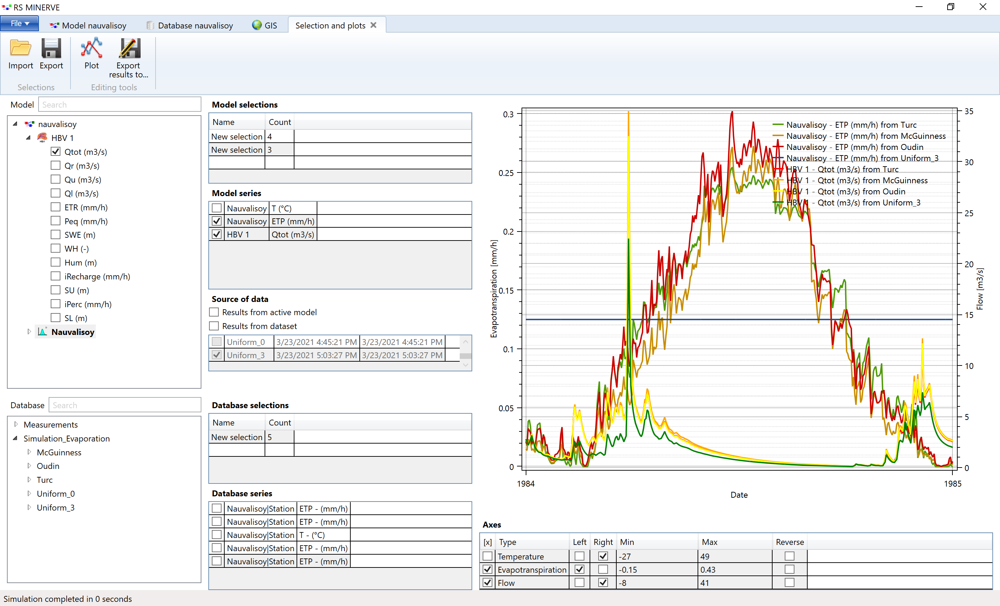

Appendix D — Exercise Solutions
D.1 Exercise on Linear Reservoir modelling
Task 1
What will determine the flow through your bucket?
The flow through the bucket will be influenced by the volume to bottom area fraction of the bucket, the amount and speed of water added to the bucket and the size of the outlet hole.
What do you need to measure?
You will need to measure:
- the discharge from your bucket over time,
- the recharge volume (how much water you put into the bucket over a given time),
- the time when you start pouring water and when you stop pouring water into the bucket, and
- the approximate volume of your bucket.
How can you measure it?
This depends on what you have available. You can draw a water level line outside of your outflow receptacle every 10 seconds and then determine the volume change over time. Maybe you have a scale and a smart phone so you can put your outflow receptacle on the scale and make a movie of the weight change over time (note, 1 kg of water is approximately 1 liter of water).
For the inflow pour a well defined volume over a well defined time interval. You can do this manually unless of course you have pipes and valves lying around that you can use.
You will need a watch for measuring time and a receptacle with known volume to measure volumes (or a scale).
A couple of notes on measurement accuracy:
- Generally, the larger the volumes, the smaller the relative measurement error. Say you measure a discharge of 50 ml in 1 s (i.e. 50 ml/s) and you can read your volume with an accuracy of 5 ml and the time with an accuracy of 0.2 s. Your measurement uncertainty becomes 11 ml/s which is more than 20 % of your discharge. If on the other hand, you measure 500 ml over 10 s (which is the same discharge of 50 ml/s) with the same inaccuracies for volume and time your measurement uncertainty for discharge becomes 1 ml/s which is only 2 % of your discharge.
- How do you estimate measurement uncertainties: Measure several times, compute the average and the standard deviation of your measurements assuming a student-t distribution.
- How do you combine uncertainties of volume and time to the uncertainty of discharge: By applying Gaussian error propagation.
What materials you will need to set up the experiment?
- For the bucket (the linear reservoir): A plastic bottle, a box or a can that is no longer used. It should have an opening at the top and the material should repel water and be thin enough that you can drill a hole into the wall.
- A pair of pointy scissors or a knife to drill a hole into the bucket.
- A water source (a tap, hose or a water container larger than the one above). This will be your rain machine.
- A watch to measure time.
- Note paper and pen.
- A receptacle for measuring the outflow.
- Additional material to facilitate measurement according to availability.

Task 2
The video was recorded with a smart phone. The weight of the outflow receptacle was noted down every second. The discharge is computed as the change of volume in the outflow receptacle over time.
Task 3
The height of the measured discharge peak can be best reproduced with k = 0.42. However, the measured discharge peaks 1s later than the simulated discharge peak.
Reasons for the discrepancy can be the shape of the linear reservoir, non-linear pouring speed, and measurement uncertainties.
D.2 Exercises on the HBV Model
Exercise: Driving Forces of the HBV Model
The model drivers are precipitation, temperature and evaporation (P, T and ET in Figure 8.6). You need to provide time series of the model drivers to the model. Evaporation is typically not measured at climate stations but many empirical functions are available in the literature to estimate evaporation. RSMinerve offers the possibility to calculate evaporation based on temperature measurements and catchment location (you will do that later in this tutorial).
Exercise - HBV Model States
The model states are the snow water equivalent height (SWE), the relative water content in the snow pack (WH), the humidity (Hum), the upper reservoir water level (SU) and the lower reservoir water level (SL). The model states are initialized using the initial conditions.
Exercise: Data Visualization in RSMinerve
Simulate from the 01/01/1981 01:00:00 to 31/12/1983 23:00:00, then choose data from 31/12/1983 23:00:00 as the initial conditions and run the model from 01/01/1984 01:00:00 to 31/12/1984 23:00:00. Choose hourly output for the simulation results.
Open the Selection and plots tab by clicking on the Selection and plots button in the Modules toolbar and select simulated P and T from the Nauvalisoy station as shown in Figure D.2.

Note: If you want to repeat a simulation with specific initial conditions, you can store them through Export IC in the Model Properties toolbar.
The approximate temperature range is -13 deg. C. in December to 34 deg. C. in August. The annual precipitation is about 1.4 m (visualize Pcum and click on the last value of the time series). No precipitation falls during the summer months.
Exercise: Compare Evaporation Methods
Figure Figure D.3 shows the evaporation computed with various methods and the resulting discharge. Uniform evaporation should not be used for sub-annual modeling time steps for obvious reasons that ET shows a strong seasonality. The difference between the different methods by Turc, McGuinness and Oudin are within 5 % of total discharge which is negligible for a regional model.

For advanced modeling, the choice of the evaporation model may be relevant but only if a validation with measured data is possible.
Exercise: Common Difficulties in Model Calibration
- Especially fully and semi-distributed hydrological models are typically over-parameterized, i.e. the number of model parameters is much larger than the number of observations for the model states. The true parameter values of the system cannot be uniquely identified based on a discharge time series alone.
- The outcome of the calibration depends on the measure of similarity between the simulated and the measured discharge.
- The water balance is often forgotten during model calibration. A nice fit of the discharge curve can for example be achieved by increasing the volume of water in the model over time.
- The model is calibrated against historical data. Its ability to predict future discharge may be limited.
- The model is not perfect, it remains an approximation of the real system and may not incorporate all relevant processes of the hydrological cycle (e.g. water storage and transport in glaciers for the case of the HBV model or significant sub-surface water fluxes that very difficult to capture as for example in Karst regions).
- Discharge measurements typically have uncertainties of 20 %. Particularly measurements at the lower and upper ends of the rating curve (i.e. the water table - discharge relationship) are typically prone to larger uncertainties (bonus question: think about why this is so!). Is the measurement location or the equipment not properly maintained, biases may grow over time. On the other hand, if the measurement method is updated and changed, the measured discharge may display a different pattern as was for example discussed in the data from Gunt River basin (Section 2.1).
Exercise: Strategies to Overcome some of the Model Calibration Difficulties
- Over-parameterization:
- Consider simplifying the model, i.e. reducing the number of parameters. If the model complexity is required, try adding additional measured variables, e.g. snow cover from MODIS data (see Chapter on snow cover data) to validate individual components of the HBV model.
- Collect data to verify individual fluxes of the model components (e.g. soil parameters, snow water equivalent, etc.). As physical measurements in the field are not always possible you may have to become creative here, e.g. use MODIS snow cover data to validate the snow/no snow partitioning of the HBV model. Also consult the literature for parameterizations of similar catchments.
- Use a combination of similarity measures. This will be demonstrated later on in the model calibration section.
- During model calibration, look at the components of the model as well as the total discharge time series. Make sure that the storage of water changes within reasonable bounds and that the partitioning of the water in your system is physically reasonable (e.g. comparatively small storage compartments for rocky mountain catchments).
- Exclude part of your data set from model calibration and use it for model validation. If the model does not perform well in the validation period, its parameters are too specific for the calibration period (you have over-fitted the model) and the model is said to not generalize well. If this happens you should try to reduce the number of parameters in your model. To understand better which parameters are responsible for the over-fit of the historical discharge, use different calibration and validation periods and compare the resulting parameters. Through sensitivity analysis, identify the model components that are most sensitive to predicted changes of model forcings, geometry or parameterization and perform scenario analysis.
- Implement and validate multiple possible conceptual models. All of the models must be calibrated and validated individually. It is further recommended to calculate at the highest possible temporal resolution and to try and compare the model outcome at different spatial resolution.
- Square-root filters or data assimilation algorithms are able to account for non-correlated measurement errors (they are not implemented in RSMinerve and not topic of this course). Error bands for the measurements should be adapted when communicating model results.
Most of the above points will be discussed in more detail during this course.
D.2.1 Exercise: Calibrate a Simple HBV Model {#sec-appendix-solutions-calibrated parameters .unnumbered}
The parameter set of the calibrated model are: ::: {.cell} ::: {.cell-output .cell-output-stdout}
| | |
|:---------------|-----:|
|CFMax (mm/°C/d) | 0.50|
|CFR (-) | 0.05|
|CWH (-) | 0.10|
|TT (°C) | 3.00|
|TTInt (°C) | 3.00|
|TTSM (°C) | 0.00|
|Beta (-) | 2.50|
|FC (mm) | 20.00|
|PWP (-) | 0.50|
|SUMax (mm) | 10.00|
|Kr (1/d) | 0.09|
|Ku (1/d) | 0.02|
|Kl (1/d) | 0.00|
|Kperc (1/d) | 0.00|::: :::
You can import the calibrated parameters via Import P in the Model Properties toolbar (note that the calibrated parameters are available for download here.